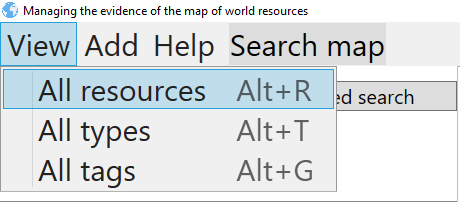
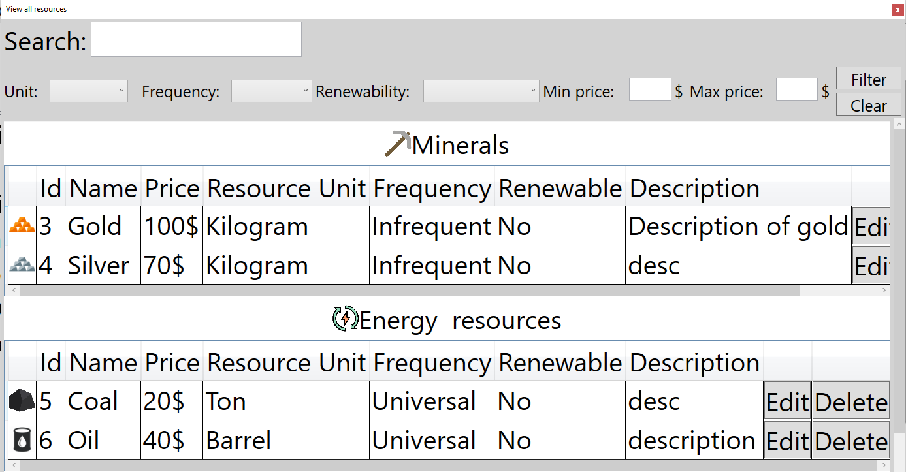
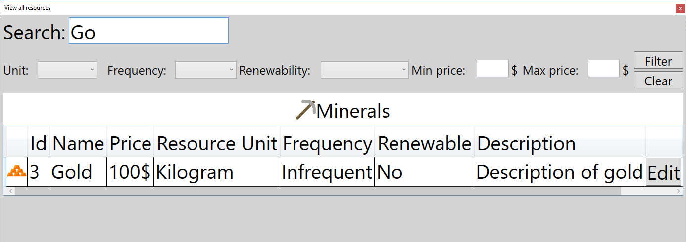

View all resources
You can overview all resources in table view. Process of overviewing should start with pressing button View->All resources, or by pressing shortcut key combination ALT+R

That action will open window that looks like this:

You can search resources using search field on top.

There are options for editing and deleting resources.